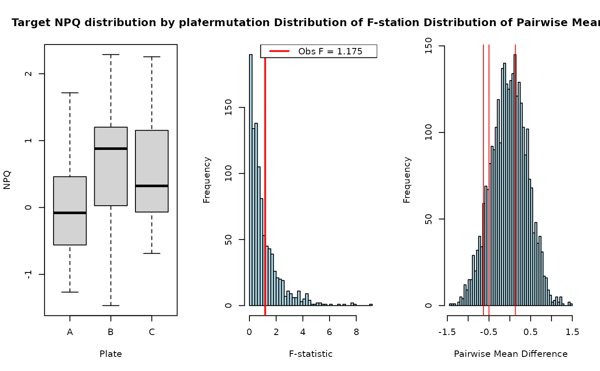

R/permutation_anova.R
permutation_anova.RdPerforms a permutation test for a one-way ANOVA, followed by post-hoc pairwise comparisons between group means. The function computes empirical p-values from a shared permutation distribution and adjusts for multiple testing.
permutation_anova(
response,
group,
B = 10000,
seed = NULL,
plot = TRUE,
fast_pairwise = FALSE
)A numeric vector of response values.
A factor vector indicating group membership for each observation.
Number of permutations to perform. Default is 10,000.
Optional integer to set random seed for reproducibility.
Logical; if TRUE, plots the permutation distributions
for the F-statistic and pairwise differences. Default is TRUE.
Logical; if TRUE, will randomly sample
only one pair mean difference for each permutation. If FALSE (default),
will calculate every pairwise difference for each permutation.
A list containing:
observed_FObserved F-statistic from the linear model.
permutation_pPermutation-based p-value for the global test.
perm_F_distributionVector of F-statistics from permuted datasets.
pairwise_resultsData frame with observed pairwise differences and p-values (raw and adjusted using Bonferroni, Holm, and BH).
perm_pairwise_distributionVector of all permuted pairwise mean differences pooled across all comparisons.
set.seed(123)
group <- factor(rep(c("A", "B", "C"), each = 10))
response <- rnorm(30) + rep(c(0, 0.5, 1), each = 10)
result <- permutation_anova(response, group, B = 1000, seed = 123)

result$pairwise_results
#> comparison obs_diffs pval p_bonf p_holm p_FDR
#> A - B A - B -0.6339963 0.1426667 0.428 0.4280000 0.3730000
#> A - C A - C -0.5008155 0.2486667 0.746 0.4973333 0.3730000
#> B - C B - C 0.1331808 0.7646667 1.000 0.7646667 0.7646667